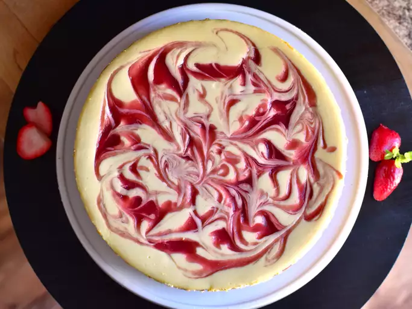

Containing graham cracker crust and a strawberry filling, the strawberry cheesecake is perfect for both children and adults. The strawberry sauce slowly drips down the cheesecake with every bite, and the filling is creamy and rich, but it’s a bit fluffy rather than heavy and dense.